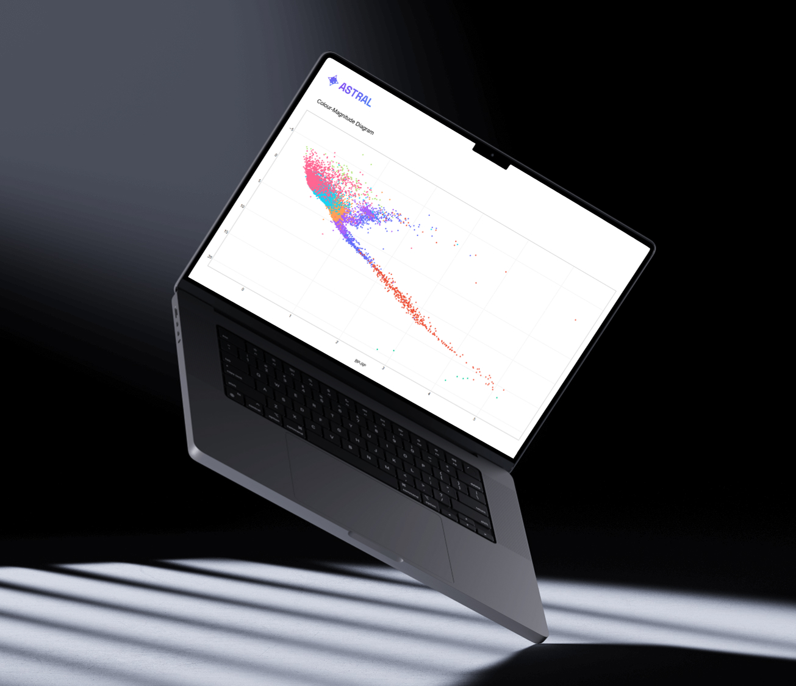

Prof. Matthew Bailes




This project sought to generate a colour-magnitude diagram from raw data in order to determine what star types exist in each area of the graph and, in the process, collate a cleaned dataset of stars and their attributes for use in further projects. To achieve this, information from two databases was combined: one much older, with stars categorised manually, and one more recent that was created with modern techniques. This allowed the expected positions of the old categorisations to be compared with the modern data points, enabling evaluation of the previous method's accuracy. The result is an interactive scatter plot, with star type visually represented by colour and shape, rollover data available for each data point, and the plotting of each star category able to be toggled on and off. The diagram can be viewed in the Online Tools page of this website.
Thank you to Rudra Sekhri for converting the program into a compatible format and embedding it onto the ASTRAL website. Thank you to Nandini Vyas and Prof. Matthew Bailes for their assistance in utilising the GAIA database. Thank you to Prof. Chris Flynn for supervising this project and guiding our use of the SIMBAD database. This project is funded by ASTRAL